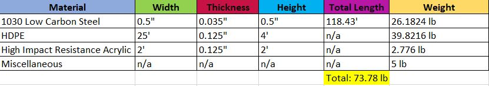
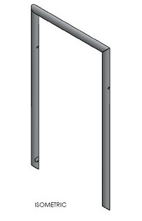

Bath Lift F12
Contents |
Abstract
The development of a Bath Lift to aid in the entry and exit of a bathtub for a girl with physical and mental disabilities is the goal of our project. This project will encompass the conceptualization, technical design, analysis, fabrication and validation of such a product using the concepts learned in our undergraduate Mechanics courses from Tennessee Technological University.
Team members
Joshua Bryant
Tanner Crook
Wesley Davis
Jason Hyder
Brandon Lenoir
Introduction
Modifications are to be made to an existing bath lift that is already installed at the home of an 18 year old girl who suffers from Cerebral Palsy. As a result of her condition, the young woman has little to no muscle control and is dependent on her mother for basic tasks such as bathing. The existing bath lift utilizes a two arm open mechanism chain with two degrees of freedom in the horizontal plane for positioning. Attaching to the open arm in the mechanism chain is a motorized pulley which is used to aid in the lifting and lowering into the bath tub. The pre-existing system employs a fabric tarp which can be wrapped around the child and contacted at four corners to the motorized pulley via attachment loops, which form a “hammock” style seat.
The complaints with the system previously in place were concerned with the fabric tarp member, which was difficult to set up in a timely manner and offered no support to the occupant during bathing. As a replacement option for the fabric support system, a shower chair will be designed to provide an easy way to transition from a wheelchair to a sturdy position for bathing with minimal effort.
Project Timeline
Design Specifications
Operation Criteria:
-Easy cleaning with little maintenance -Resist tarnishing in water -Able to transition into from a wheelchair -Attachability to a motorized pulley system
Safety/Performance Specifications:
-Restraint system to secure individual -Comfortable for occupant -Support 150lbs -Total weight (w/ occupant) <425 lbs
Occupant dimensions:
-Weight: 120-125 lbs. -Height: 5’5”-5’6”
Conceptual Design General
General Design Concept 1 (G1) - Swivel Shower Chair
A standing swivel chair that can be fixed to the bath allowing for yaw in the horizontal plain once the child is in the chair. This would require an outside lift (already in place) to put the child into the chair.
General Design Concept 2 (G2) - Cradle Shower Chair/Lift
A cradle chair that attaches to the bath lift’s motorized pulley that this already installed in the bathroom. This cradle would not only transport the child into the bath, but would also support her once in the tub.
General Design Concept 3 (G3) - Rigid Shower Chair/Lift
A chair (folding or fixed pitch) that can be lifted into the tub via the motorized pulley system that is already in place. This chair would not only transport the child into the bath, but would also support her once in the tub, with minimal interference.
Concept Analysis
General Concept 1: (G1)
Pros- Maneuverability once in the tub. Little moving parts.
Cons- Does not aid in lifting child into the tub. Would have to be fixable to tub.
General Concept 2: (G2)
Pros- Easy to get the child into the cradle. Little moving parts.
Cons- Circular cradle would interfere with fit into tub. Would require motorized pulley system to stay connected during bath to give support.
General Concept 3: (G3)
Pros- Allows for adjustable seating position (back support pitch). Can be placed in wheelchair seat for easy transfer to lift.
Cons- If made adjustable, would require additional moving parts.
Detailed Design
Detailed description of the concept
General Concept 3 was used as a basis for the Bath Lift Chair Design. It was decided to deviate from the origional concept and pursue a rigid (non-adjustable) chair, making the system simpler and more robust. Fitting into the seat of a wheelchair, this design allows for an easy transition from a wheelchair into a bathtub, where the chair will also act as a support while bathing.
Rigid Chair Lift
The chair will consist of a rigid metal frame with a fabric mesh back and seat. The fabric will allow for slight changes in position without distributing additional pressure into the occupant. Four straps will be connected to the frame, two on the back and two on the seat. These straps will come together and connect to the pre-existing motorized pulley system via a carabiner connection. In addition, the location of the straps is optimized to achieve an approximately 20 degree tilt during lifting. This tilt will aid in keeping the occupant seated in the chair, and will also help distribute lifting forces through her entire body and not just her thighs.
Shower Curtain Assembly
In addition to the shower chair, the shower curtain rod assembly will be replaced with a removable rod assembly to aid in the using of the motorized bath lift. To do this, both ends of the shower curtain rod will be fixed into the wall. The middle section of the rod will be allowed to teloscope and lock into an open and closed position. When the motorized lift and chair are used, the center of the shower rod is slid into the fixed member . In order to prevent the curtain from falling off, a slight tapper has been designed into the section being fixed to the wall.
With the removable shower curtain and rigid bath chair addition to the motorized lifting system, the occupant will be easily and safely lifted into the bath tub where the rigid chair will act as a support for bathing.
Analsyis
Engineering Analysis has been performed on several components of the Bath Lift Chair ensuring the safety and functionality of the system. All analyses employ the use of a factor of safety greater than three.
Lifting Strap Force and Location
Assuming quasistatic lifting conditions and the center of mass equal to the approximate location of the occupant's belly button, the force generated in the planer straps has been calculated. In addition, the position of the horizontal strap has been determined to equate to an approximate tilt of 20 degrees from the horizontal during lifting. 

Hardware Optimization
Analysis of the attachment hardware has been conducted to ensure proper bolt sizing to handle the shear forces generated in the bolt during lifting. The minimum bolt diameter that could be used with a total Factor of Safety equal to four is 0.117". For our design we are using .3125" diameter bolts.
Frame Tubing Optimization
Optimization of the metal tubing has been conducted to ensure that no detrimental bending well occur during lifting. For our design, we are using 1" Outer Diameter 6061-T6 Aluminum tubing with a wall thickness of .065". Our design meets a factor of safety equal to 7.2.
Strap Anchor Shear Stress
The shear stress generated in the Screw Links during quasistatic lifting conditions has been calculated to ~6ksi using a Factor of Saftey equal to six. This is far bellow the yeild stress of 50.3ksi for Normalized 1020 plain carbon steel.
Design Failure Mode and Effects Analysis
A brief FMEA has been compiled throughout the design stage to document potential hazards as well potential corrective actions.
CAD Drawings
Chair Frame
Fabric Template
To be wrapped over the frame.
Shower Curtain Rod
Bill of Materials
Assembly Instructions
The metal that we decided to use on the frame, of the Bath Lift, is 304 Stainless Steel. The building of the frame as of right now will be outsourced to a nearby company. There will be four 90 degree angles. The back frame and the seat frame will both require the 90 degree angles.
Seat Back  Seat Bottom
Notched Bracing Bars (x2) Support Belt Anchor (x8)
Screw Link (x2) Assembled Chair
Assembly/Fabrication Method
The meterial that we decided to use on the frame of the Bath Lift was 6061 T6 Aluminum. All miters and welds were facricated in the Mechanical Engineering shop. The fabric was sowed on at Edd's Auto Trim.
The chair seat and back were fabricated first, without the Notched Bracing Bars to allow for the stitching to take place. Two sleeves were then stitched in the fabric for the installation of the Notched Bracing Bars, which were then attached to the chair. The chair seat and back were TIG welded together taking extra care not to damage the fabric.
Chair Fabrication Steps
1. Measure and mark correct sizes for the chair using 6061 T6 Aluminum material.
2. Cut the raw material using the vertical band saw.
- The chair will be welded together using 90 degree miters.
3. The miters will be manufactured using a vertical mill.
4. Once all of the material has been cut to size, spot weld each joint for the seat and the back of the chair.
- The attachment of the fabric will be assembled from Edd's Auto Trim; the fabric will be
wrapped around both the seat frame and the back frame. The fabric will be stitched.
5. Once the Fabric has been attached to the chair, completely weld the chair together.
6. Attach both ends of the bracing bar to both of the seat joints.
7. Once the bracing bar and the seat joints are together, take the seat frame and insert it into the Vertical hole in the seat joint.
8. Check alignment; make sure the seat sits flat and sturdy on a solid horizontal surface.
9. ***Attach the back frame to the assembly, check/measure angle.
10. Weld the seams.
11. The belt will slide through the seat belt anchor and it will be stitched to itself.
12. Bolt belt anchor to frame. (with Sliding bolts)
13. The opposite seat belt anchors will be attached via the Screwed Links
14. A Carabiner is then installed to the Screwed Link to connect to the shower lift.
Shower Rod Fabrication Steps
1. Measure and mark correct sizes for the shower rod using 6061 T6 Aluminum material.
2. Cut the raw material using the vertical band saw.
- The shower rod will be welded together using 45 degree miters.
3. The miters will be manufactured using a vertical mill.
4. Once all of the material has been cut to size, the miters will be then applied to the rod.
5. With the miters complete, the complete welding process of the two miters will begin.
6. Once welded together, the cut out on both rods will be applied using a vertical mill.
7. To create a locking mechanism, a pin is reamed into the middle shower rod piece.
8. To complete fabrication the material is polished to a brushed finish.
Fabrication Pictures

Completed Design Photos
It works!
The Shower Rod:
Summary and Conclusions
Overall our design was a success in helping to impove the bathing process for a young woman with Cerebral Palsy. The shower chair is able to fit into a wheel chair and comfortably lift the occupant from the wheel chair into the bath tub using to current motorized pulley system. This is done by making two easy rigid connections to the motorized pulley via Carabiners.
Although falling slightly being schedule, we were able to meet our target delivery date of the 14th of December. A brief breakdown of the work content and completion dates is shown in the Open Points List.
Appendix
Material Property Tables
Yield Strength of steel alloy: (used in zinc plated Screw Link and Seat Belt Anchors)
Yield Strength of 6061-T6 Al.:
Additional Hand Calculations
Hand Calculations for the Force/Angle analysis:
Bath Tub Layout
General dimensions of the bath tub.
Works Cited
Material Properties:
Callister, William D. Materials Science and Engineering: An Introduction. New York: John Wiley & Sons, 2007. Print.
Analysis Equations/Reference:
Hibbeler, R. C. Mechanics of Materials. Upper Saddle River, NJ: Prentice Hall, 1997. Print.